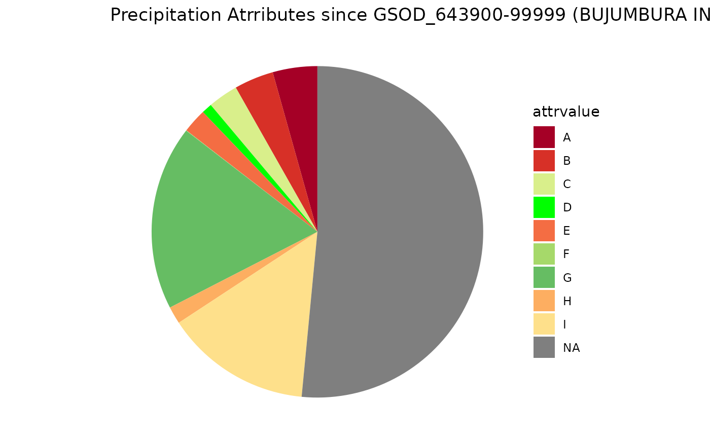

get_ts.RdGet a time series from spatio-temporal database, eg. variables (or measurement types)
database or dateset, e.g like db
ts variable table name
list of possible arguments for get_p
list of possible arguments for get_variable
id number for p table
id number for variable table
timstep used between two adjacent timestamps . Unit is second. It is used if regular_timestamptz==TRUE.
logical. Default is FALSE . If it is TRUE the timestamps are regularly distributed with possible value values equal to NA.
further arguments
data(db)
p <- get_p(x=db)
px <- p[49,] |> st_buffer(dist=250*1000)
out <- get_ts(x=db,get_p_args=list(p=px),get_variable_args=list(name=c("MIN","MAX","PRCP")))
#> Warning: attribute variables are assumed to be spatially constant throughout all geometries
#> Warning: NAs introduced by coercion
## Precipitation in one site
px <- p[49,] |> st_buffer(dist=1)
prcp <- get_ts(x=db,get_p_args=list(p=px),
get_variable_args=list(name=c("PRCP")),
regular_timestamptz=TRUE)
#> Warning: attribute variables are assumed to be spatially constant throughout all geometries
#> Warning: NAs introduced by coercion
#> Joining with `by = join_by(timestamptz)`
## Aggregation through summarize ## chech quality after 1981
library(dplyr)
#>
#> Attaching package: ‘dplyr’
#> The following objects are masked from ‘package:terra’:
#>
#> intersect, union
#> The following objects are masked from ‘package:data.table’:
#>
#> between, first, last
#> The following objects are masked from ‘package:stats’:
#>
#> filter, lag
#> The following objects are masked from ‘package:base’:
#>
#> intersect, setdiff, setequal, union
library(ggplot2)
ddata <- prcp |> filter(timestamptz>as.POSIXct("1980-12-31")) |>
group_by(attrvalue) |> summarize(nvalues=length(value)) |> ungroup()
ccols <- list(
A="#a50026", #A = 1 report of 6hour precipitation amount;
B="#d73027", # B = Summation of 2 reports of 6-hour precipitation amount;
E="#f46d43", #E = 1 report of 12-hour precipitation amount;
D ="green", #D= Summation of 4 reports of 6-hour precipitation amount;
H="#fdae61",
# H = Station reported 0 as the amount for the day (e.g. from 6 hour reports),
# but also reported at least one occurrence of precipitation in hourly observations
# this could indicate a trace occurred, but should be considered as incomplete data for the day;
I="#fee08b",
# I = Station did not report any precipitation data for the day and did not report any occurrences of precipitation in its hourly observations-it's still possible that precipitation occurred but was not reported;
C="#d9ef8b",# C = Summation of 3 reports of 6-hour precipitation amount;
F="#a6d96a",# F = Summation of 2 reports of 12-hour precipitation amount;
G="#66bd63" # G = 1 report of 24-hour precipitation amount;
) |> unlist()
title <- sprintf("Precipitation Atrributes since %s",px$name2[1])
gg <- ggplot(ddata, aes(x = "", y = nvalues, fill = attrvalue)) +
geom_bar(width = 1, stat = "identity") +
coord_polar("y", start = 0) +
scale_fill_manual(values = ccols) + # Aggiungi i colori personalizzati
theme_void() +
labs(title = title)
gg
